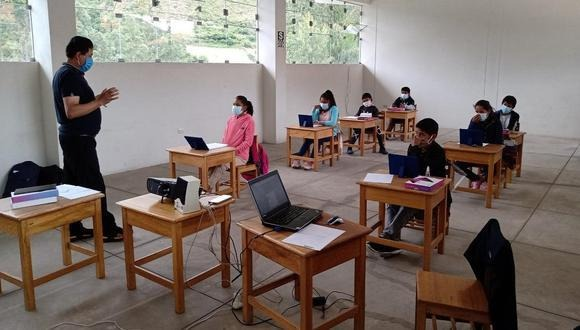

11 de octubre de 2021 | Maria Cecilia Villegas
¿Y la educación para cuándo?
Si uno circula por las ciudades del Perú, podrá ver que los restaurantes, los cines, las tiendas y los bares están abiertos y llenos de gente. Sin embargo, los colegios siguen cerrados. Ello, a pesar de la demanda de los padres de familia y de los organismos especializados a nivel internacional. La excusa del COVID-19 no es más que una muestra de la inoperancia del sector educación.
Leer Más...